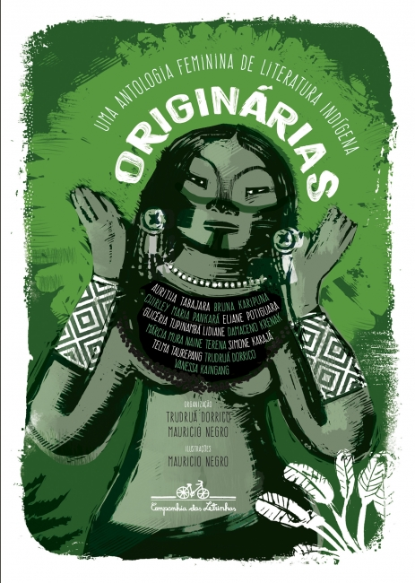

A História de Paká
O livro "Originárias" conta com a história de doze autoras contemporâneas de diferentes nações indígenas. Uma delas é a de Paká, que será abordada a seguir:
A história de Paká, presente em "Originárias: uma antologia feminina de literatura indígena", narra a trajetória de uma jovem indígena que vive uma profunda transformação espiritual ao se reconectar com suas raízes e com a natureza. A narrativa é contada com lirismo e sensibilidade, valorizando a oralidade e os saberes ancestrais do povo indígena da personagem.
Paká passa por um processo de autoconhecimento e amadurecimento que começa quando ela ouve os ensinamentos dos mais velhos e começa a perceber os sinais da floresta, dos rios e dos animais com partes vivas de sua identidade. A natureza, nesse contexto, não é apenas cenário, mas personagem viva e ativa, que orienta, protege e transforma.
O nome Paká carrega simbolismo: representa tanto a personagem quanto a força da ancestralidade feminina indígena. A personagem vive momentos de dúvida e ruptura, mas é justamente nesse conflito que ela se transforma - uma espécie de rito de passagem em que reencontra sua força espiritual, guiada pelos cantos, rituais e pela memória do seu povo.
A história aborda temas como identidade, pertencimento, memória ancestral e a relação sagrada com a terra. Ao final, Paká não é a mesma - ela se torna um elo entre o passado e o presente, entre os saberes antigos e a resistência contemporânea dos povos originários.